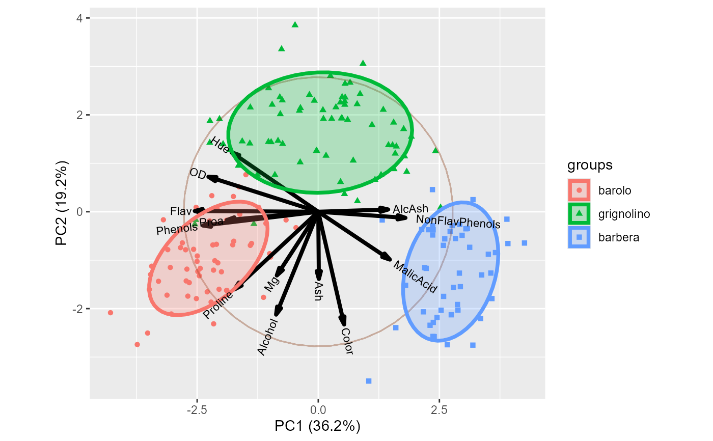

Results of a chemical analysis of wines grown in the same region in Italy, derived from three different cultivars. The analysis determined the quantities of 13 chemical constituents found in each of the three types of wines.
The grape varieties (cultivars), 'barolo', 'barbera', and 'grignolino', are indicated in wine.class.
Usage
data(wine)Format
A wine data frame consisting of 178 observations (rows) and
13 columns and vector wine.class of factors indicating the cultivars.
The variables are:
Alcohola numeric vector
MalicAcidMalic acid, a numeric vector
AshAsh, a numeric vector
AlcAshAlcalinity of ash, a numeric vector
MgMagnesium, a numeric vector
Phenolstotal phenols, a numeric vector
FlavFlavanoids, a numeric vector
NonFlavPhenolsNonflavanoid phenols, a numeric vector
ProaProanthocyanins, a numeric vector
ColorColor intensity, a numeric vector
Huea numeric vector
ODD280/OD315 of diluted wines, a numeric vector
Prolinea numeric vector
Source
UCI Machine Learning Repository (http://archive.ics.uci.edu/ml/datasets/Wine)
Examples
data(wine)
table(wine.class)
#> wine.class
#> barolo grignolino barbera
#> 59 71 48
wine.pca <- prcomp(wine, scale. = TRUE)
ggscreeplot(wine.pca)
 ggbiplot(wine.pca,
obs.scale = 1, var.scale = 1,
groups = wine.class, ellipse = TRUE, circle = TRUE)
ggbiplot(wine.pca,
obs.scale = 1, var.scale = 1,
groups = wine.class, ellipse = TRUE, circle = TRUE)
